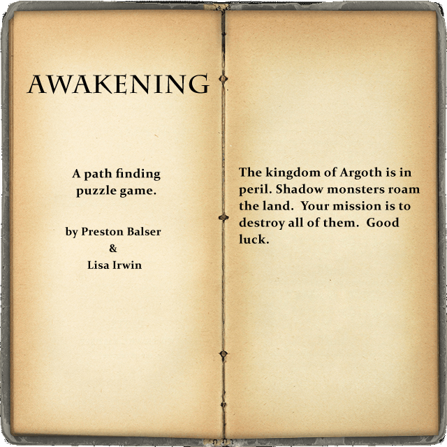

This text is displayed if your browser does not support HTML5 Canvas.
This text is displayed if your browser does not support HTML5 Canvas.
Play Game

Monsters Killed:
0
Treasures Found:
0
Remember...kill all the monsters in every room to win!